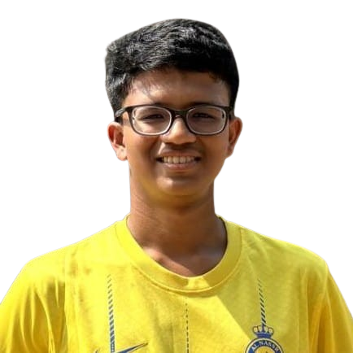

👋 Hey there!
I’m Aniket Bhatikar from Goa, India—a place of beaches⛱️🌊, football⚽, and amazing
food😋. I love to explore—not just places 🌍, but ideas, people, and how things work🔍. Whether
it’s
science, tech⚙️, or the way life takes unexpected turns🍃, I enjoy figuring things out. You can
call
me ABC.😀
I’ve always been someone who thinks a lot.🤔 Not in an overthinking way (well, sometimes😅), but
more in a curious way. Why do things work the way they do? What makes people tick? How does
something simple lead to something extraordinary? I like asking these questions, and while I
don’t always get answers, the process of thinking about them is what excites me.🤩
This blog is my way of putting those thoughts 💭 into words. It’s not bound by any specific
theme—just a collection of experiences, reflections, and things that interest me. I write about
competitions I’ve been a part of, moments that shaped my perspective, and the small but
significant ways life keeps changing🪜. Some posts are deep, some are casual, and some are just
random thoughts I feel like sharing. There’s also a tutorial section (still a work in progress)
where I might add useful content over time, and a press section featuring some mentions—though
that’s just for fun.😃
Beyond writing, one thing that always excites me is football ⚽. I’m not the best player out
there, but I love watching matches. FC Goa 🧡💙🦬 is my favourate football club, and matchdays always bring a
different kind of energy🔥. Supporting our Gaurs playing in the field for 90 minutes and beyond, the unpredictability—it’s something you
have to experience to understand.
Another thing about me? I love food. 🍛🥘 A lot! Good food has a way of making everything
better, whether it’s a plate of something comforting or a new dish I’m trying for the first
time. If we ever meet, don’t be surprised if food becomes a major part of our conversation.😂
I also enjoy traveling🧳—not in a checklist way, but more in the sense of experiencing new
places🗺️,
cultures, and people. Sometimes, the best moments aren’t the planned ones but the ones that just
happen along the way😇. Life is full of those unexpected moments, and I love being in the middle
of them.😍
This blog isn’t just about me—it’s about perspectives, experiences, and ideas that might
resonate with you too. Stick around, read a bit, and who knows? You might find something that
makes you think, smile🙂, or even see things a little differently.😉
Have a great day ahead!☺️
Dev bare karu!✨